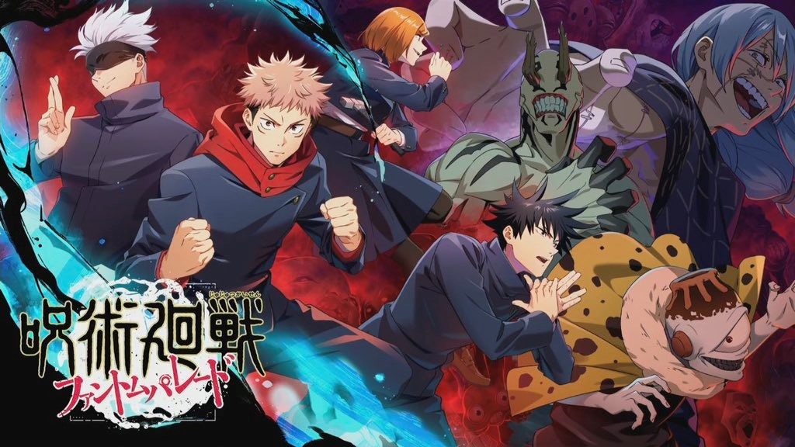
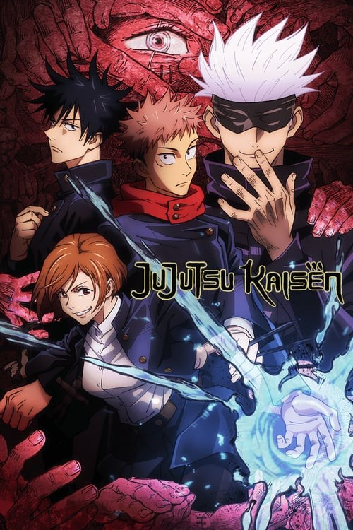

JUJUTSU
Jujutsu Kaisen เนื้อเรื่องย่อ
อิตาโดริ ยูจิ เด็กนักเรียนชั้นมัธยมปลายปี 1 หนึ่งในสมาชิกชมรมวิจัยสิ่งลี้ลับ ผู้ค้นพบวัตถุประหลาดเข้า จึงได้นำมามอบให้กับพวกรุ่นพี่ที่อยู่ในชมรม ในขณะเดียวกัน ฟุชิงุโระ เมงุมิ ก็ได้ออกมาตามหาคำสาประดับพิเศษ นั่นก็คือนิ้วของ เรียวเมง สุคุนะ ที่อิตาโดริเก็บได้นั่นเอง ฟุชิงุโระเมื่อรู้ว่าคำสาปอยู่ที่อิตาโดริจึงรีบตามไปเอาคืน แต่ก็พบว่าความซวยได้มาเยือนพวกเขาแล้วแน่นอน เมื่อเหล่ารุ่นพี่ของอิตาโดริตัดสินใจที่จะคลายผนึกออก (เห้ย! ผนึกคำสาปอะไรมันจะแกะออกง่ายขนาดนั้น)

และแล้วฝันร้ายก็เริ่มต้นขึ้นจนได้
เมื่อเหล่าคำสาปที่อยู่ใกล้บริเวณนั้นสัมผัสได้ถึงพลังที่แข็งแกร่งจึงรีบเข้ามาแย่งกัน เพราะมันคือ
‘กุญแจสำคัญ’ ในการมอบพลังอำนาจอันแข็งแกร่งให้แก่ผู้ที่กินมันเข้าไป
ทั้งฟุชิงุโระและอิตาโดริพยายามช่วยรุ่นพี่ทั้งสองให้ปลอดภัย
แต่ฟุชิงุโระกลับบาดเจ็บหนักจนไม่สามารถทำอะไรได้มากนัก เพื่อจะช่วยทั้งรุ่นพี่และฟุชิงุโระ
พ่อหนุ่มอิตาโดริจึงตัดสินใจกินคำสาประดับพิเศษเข้าไปเองซะงั้น!! เพราะ
“คำสาปต้องกำจัดด้วยคำสาปเท่านั้น” นี่จึงเป็นจุดเริ่มต้นของเรื่องราวอันยิ่งใหญ่กับความวุ่นวายระดับ
‘บรรลัย’ ที่สายแอ็กชัน-แฟนตาซีไม่ควรพลาด!